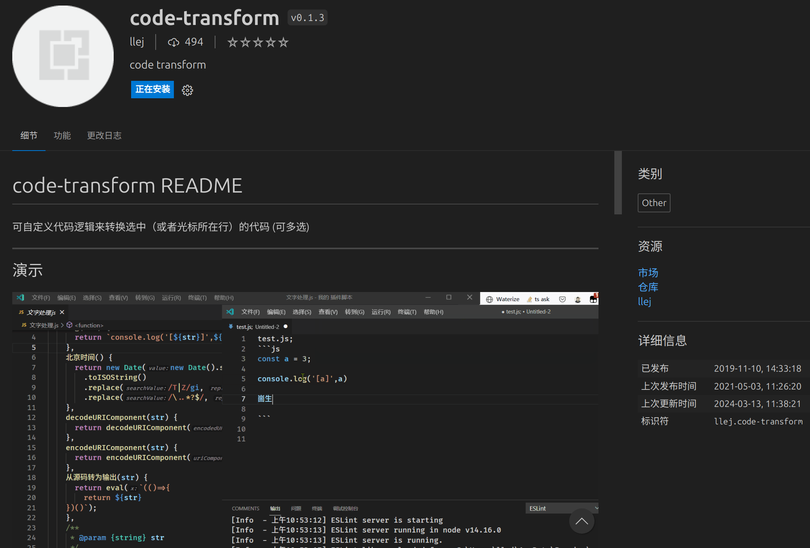

首页
2024-03-13
code-transform

今天更新了一下这个几年前写的vscode插件
https://github.com/2234839/code-transform
|
https://marketplace.visualstudio.com/items?itemName=llej.code-transform
感叹一下 vscode 的架构设计真的很厉害，兼容性挺强的，这个插件即便好几年没有更新了也还是能用的，但用户可能看到上次维护时间是3年前可能就不想下了。
所以升级了一下依赖，按照
开发最佳实践
调整了一下编译工具链。